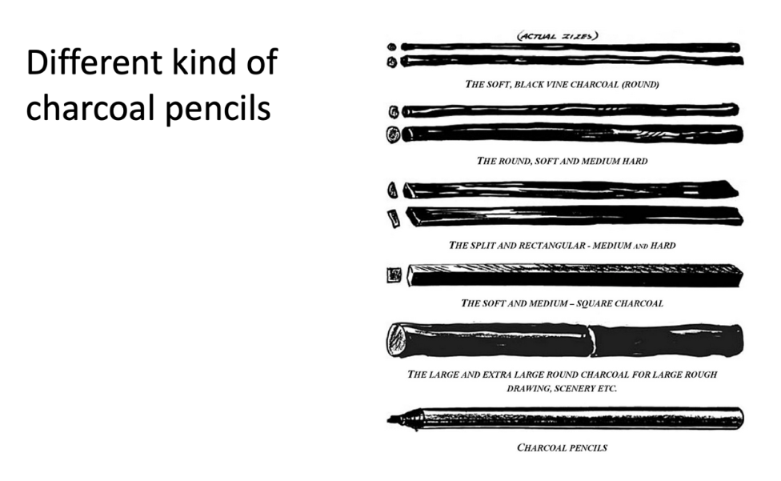

Basics of Charcoal Drawing
An interactive, learner-centered design course exploring the art and technique of charcoal drawing.
Project Overview
This self-paced course introduces the fundamentals of charcoal drawing, guiding learners through identifying materials, creating basic forms, and developing shading techniques. Designed for art enthusiasts of all backgrounds, the course offers personalized learning paths and engaging activities.
Challenge
Learners often struggle with navigating artistic techniques without proper guidance or structure. This project seeks to simplify charcoal drawing into approachable lessons while keeping engagement high.
Goals
• Identify essential charcoal tools and techniques
• Create shaded forms using blending methods
• Analyze and evaluate drawing quality effectively
Instructional Design Approach
This course integrates principles from David Krathwohl’s cognitive research to address the diverse needs of adult learners in digital environments. Key strategies include:
- Chunking: Content is divided into manageable modules (tools, techniques, applications).
- Self-pacing: Learners control their speed, reducing cognitive overload and enabling better retention.
- Visual Cues: Interface elements like a progress bar and highlighted menu items reflect learning stages.
- Scaffolded Tasks: From tool recognition to drawing analysis, each task builds on the previous level.
- Multimodal Content: Includes video, interactive tests, and reflection activities to cater to diverse learning styles.
Learning Objectives
- Identify and differentiate between charcoal drawing tools and grades : Factual Knowledge — Remembering
- Create a blended still-life drawing using foundational techniques : Procedural Knowledge — Applying
- Analyze and evaluate composition, shading, and perspective in a drawing : Metacognitive Knowledge — Evaluating
Impact & Evaluation
12
Learners Tested
0.921
Cohen’s d Effect Size (Large)
100%
Completed Pre/Post-Test
Learner-Centered Approach
- Custom learning paths based on pre-test knowledge
- Interactive activities for hands-on drawing and evaluation
- Visual aids like videos, diagrams, and examples
- Post-test with reflective analysis to reinforce learning